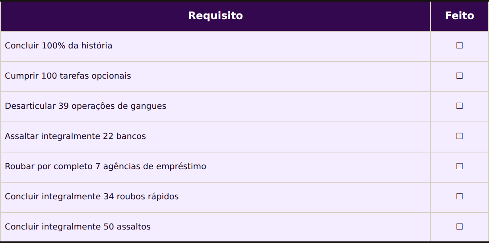

Guia não oficial · português
Central Leonida
Uma planilha para acompanhar o progresso do 100% de GTA 6. Você marca o que já fez e vê o que ainda falta.
Funciona no Excel e no Google Sheets. O mesmo arquivo serve para PS5 e Xbox.
Comprar a planilha · Checklist grátis em PDF · Demo em vídeo

O que tem no arquivo
A planilha tem abas para requisitos, missões, troféus e contadores de colecionáveis. Cada linha tem uma caixa para marcar. O painel soma o que você marcou e mostra o progresso por categoria.
Ela não é um mapa e não mostra onde cada item está. Serve para você saber o que falta e não repetir conteúdo.
Versões
Básica — US$ 4,99. A planilha, o checklist de 100% para imprimir, o LEIA-ME e a licença.
Completa — US$ 7,99. Tudo da Básica, mais os guias “Primeiros 10 Horas” e “Rota da Platina” e um tour em vídeo.
Pagamento único. Atualizações por 12 meses. Garantia de 7 dias. A Gumroad pode mostrar o preço na moeda do seu país.
Outras páginas
Guias em português
Textos sobre os requisitos, os troféus e o que pesa na platina.
- Como platinar GTA 6: o caminho completo sem se perder. Guia em português para platinar GTA 6: os requisitos do 100%, os troféus e um método de 5 passos para não deixar nada para trás.
- Checklist GTA 6 100%: os requisitos em português. Lista completa dos requisitos do 100% de GTA 6, dividida por categoria, com metas e um checklist gratuito em PDF para imprimir.
- Todos os troféus de GTA 6 em português: tipos e como acompanhar. GTA 6 tem troféus: 1 platina, 2 ouros, 6 pratas e 46 bronzes. Veja os tipos, o que pesa na platina e como marcar o que falta.
- Missões de GTA 6 em ordem: os 5 capítulos. As missões da história de GTA 6 estão divididas em 5 capítulos. Veja a estrutura, por que a ordem importa para o 100% e como se organizar.
- Colecionáveis de GTA 6: os contadores do 100%. Veja todos os grupos de colecionáveis e atividades de GTA 6 que contam para o 100%: quantos existem no mapa, quantos você precisa e como controlar.
- Conteúdo perdível em GTA 6: o que dá para perder de verdade. Na versão 1.0, nenhum requisito do 100% de GTA 6 é perdível. O único perdível conhecido é o troféu da meditação do capítulo 1; veja como não perder.
- Quanto tempo leva para platinar GTA 6? O que pesa no relógio. Entenda por que o tempo para platinar GTA 6 varia tanto, quais atividades consomem mais horas e como reduzir o retrabalho.
- GTA 6 no PS5 e no Xbox: o 100% é diferente?. O conteúdo do 100% de GTA 6 é o mesmo no PS5 e no Xbox. Veja o que muda entre troféus e conquistas e como usar a mesma planilha nas duas plataformas.
- GTA 6 tem troféu online? O que a lista de lançamento mostra. A lista de lançamento de GTA 6 tem troféus e cobre a campanha. Veja o que isso significa para a platina e o que pode mudar com atualizações.
- Planilha ou guia em vídeo para o 100% de GTA 6?. Planilha, vídeo, checklist em PDF ou mapa interativo: veja o que cada formato resolve no 100% de GTA 6 e qual combina com o seu jeito de jogar.
Perguntas frequentes
Preciso ter o jogo para usar a planilha?
Sim. A planilha acompanha o seu progresso; ela não inclui o jogo.
Funciona no Excel e no Google Sheets?
Sim. O arquivo .xlsx abre no Excel. No Google Sheets, envie para o Drive e escolha “Abrir com Google Sheets”.
Serve para PS5 e Xbox?
Sim. O conteúdo do jogo é o mesmo nas duas plataformas.
A planilha mostra a localização dos itens?
Não. Ela organiza o progresso. Para encontrar itens no mapa, use um mapa interativo.
Tem uma versão grátis?
Sim. O checklist do 100% em PDF está em checklist-35-requisitos.pdf, e o checklist interativo mostra o progresso por categoria no navegador.